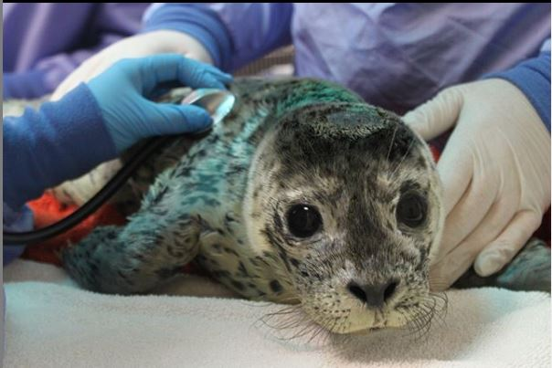
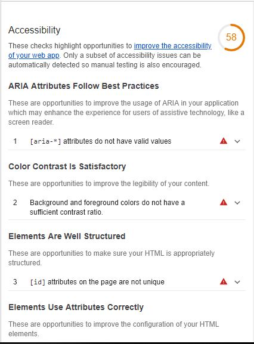
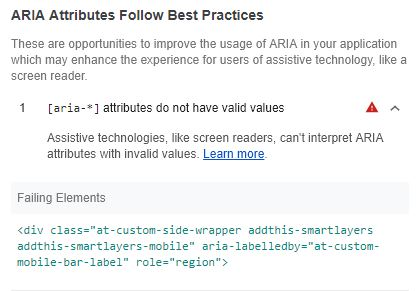
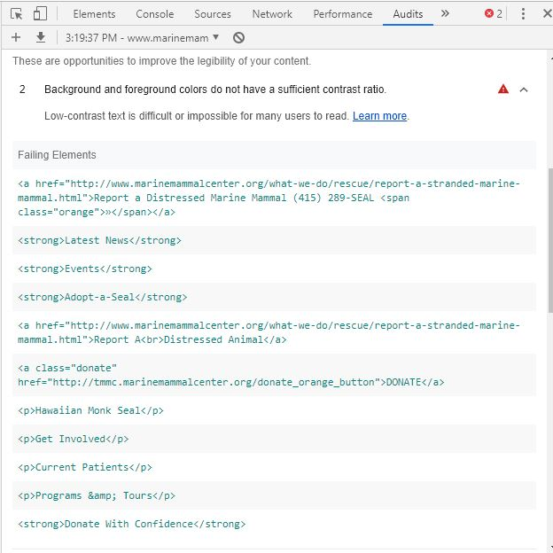

If you're a Gen Xer or older, remember the first time you heard about Books On Tape? The thought of being able to listen to the latest Tom Clancy or Leon Uris novel while sitting in your car or doing laundry was amazing! Multitasking at its finest! Now I, too, can talk about the latest and greatest novel on The New York Times Best Seller's List at this month's neighborhood dessert party. Or in my case, making those super long family road trips that rivaled the Griswold's adventure to Wally World just a little more bearable.
Fast forward to digital age and everything on the internet. We have put aside the books on tape and have gone back to reading the book - but this time on our Kindle while checking our emails, Facebook, Snapchat, Instagram, and live tweeting about the weirdo on the bus all at the same time.
But what about those with sight impairments? How about hearing impairments?
For example, Instagram seems almost antithesis for someone who can't see well. And what about those Instagram stories with the cute little GIF that says "Sound On!" for those with a hearing issues?
It wasn't until I had a deaf roommate and used TTY for communications. It was quite an experience to have someone read to you his messages that he's typing and then listen to the operator ask you to pause while she typed out your response. I like to think of it as early days of text messaging and the precursor to Blackberry. (If you must know it was 1997.) This made me realize how often I took my hearing for granted.
Then about 10 years later, my grnadmother started to lose her eyesight to macular degeneration. She was an avid reader and loved doing crossword puzzles but with her inability to see, how was she going to keep these things up? Enter the books on tape. (Amazing how what was old is now new!) She was luck to have a library with a very large selection of them and then soon companies like Audible provided digital content.
Enter the World of Regulations
According to Section 508 of the Rehabilitation Act of 1978, the progress of our technology was so vast and grand and unanticipated, that they had to amend the section to include ways of disseminating electronic information for those with disabilities.
The dreams of yesterday are the hopes of today and the reality of tomorrow. Science has not yet mastered prophecy. We predict too much for the next year and yet far too little for the next ten.
I think companies and technology providers have done a pretty good job so far to be able to provide the information in an easy-to-use format. In this week's assignment we're introduced to Chrome's Lighthouse tool which allows you to audit a particular website for usability.
The Kind of Audit You Actually Welcome
Now let's look at a website. I will continue to use The Marine Mammal Center as my test subject as I'm sure you haven't tired yet of those cute fuzzy furry faces,
 Pacific Harbor Seal, Phoca vitulinaSo go to their page, and run Audits in the Developer Tools. Ouch. An accessibility score of 58. Yeah that kinda hurts. So let's see what happened. I'm only going to focus on 2 things - ARIA and contrast.
 Screenshot of the website audit as done in Chrome LighthouseARIA - oof. Big fail here.
If the website slowed down the picture carousel and possibly decreased the number of menu items, I wonder if some adaptive technologies could be used here. Even as one with decent vision and hearing it's difficult to manage. And I've mentioned this before in a previous blog entry.
Now let's talk about color contrast. Using blue on this page is almost a no-brainer. If you're an organization that does most of its work associated with the ocean then blue is the something everyone can get on board with. But with so many variations of blue, which ones works and what about the contrast color? Or how about, do we have to use it everywhere? Below is a screenshot of the comments from the audit.
 Screenshot of the website audit as done in Chrome LighthouseAs you can see, the audit actually picks up on the code where improvements can be made. I think this is huge as it provides the developers, the coders, and the shareholders an opportunity to expand on their website without having expend too many resources.
To be fair though, their primary focus is really on helping the animals as they are a working animal hospital. But with the need for financial help and volunteers, and their location in the San Francisco Bay Area with the likes of Google, Facebook, and Apple just a quick drive away, you'd almost think that they'd want to work on that appeal. I think if TMMC really does want to try something out and make a larger impact witih their website, it would benefit them to look at these recommendations and find small and easy ways to work them into their site.